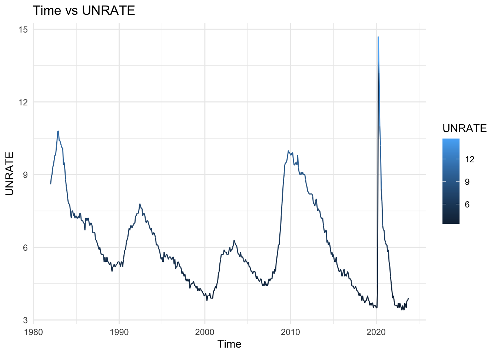
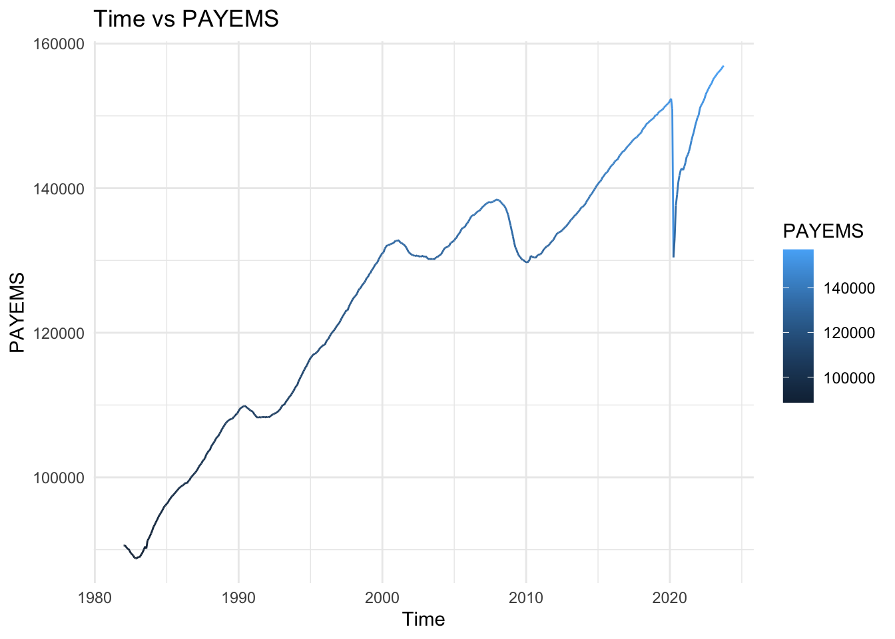
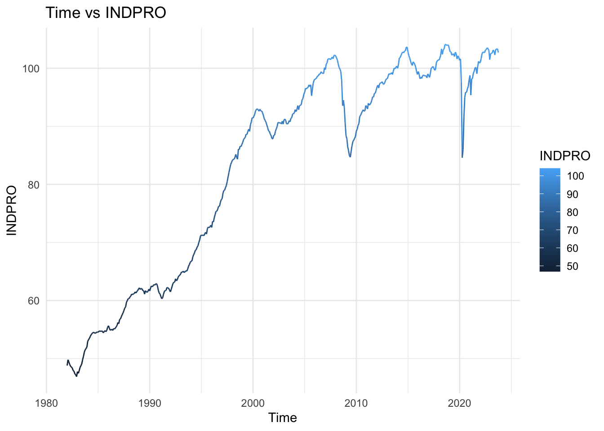
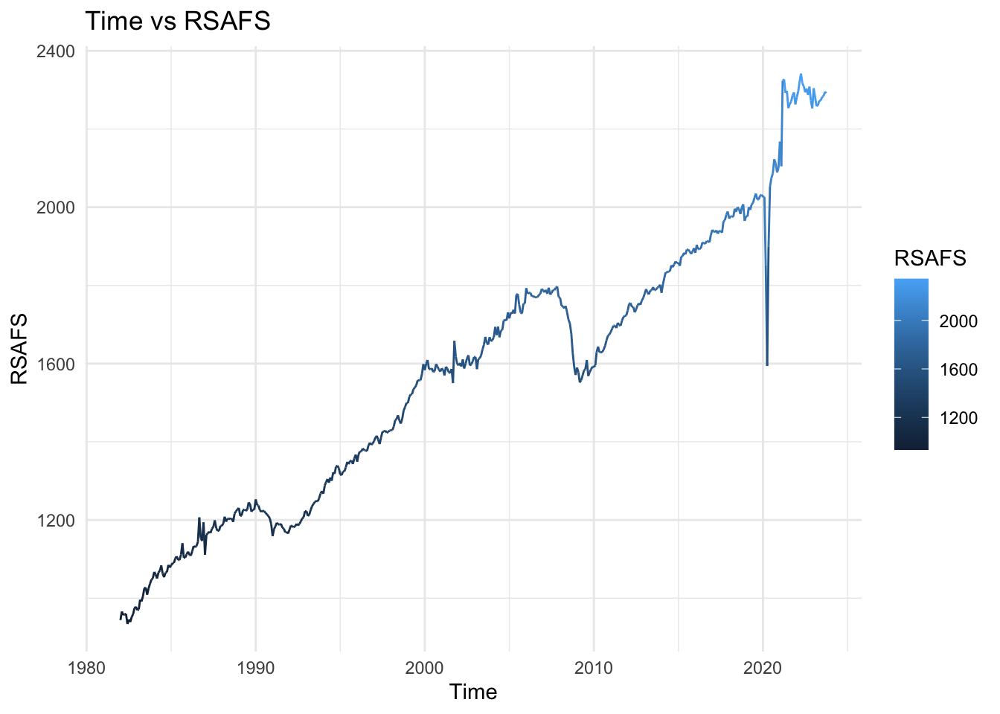
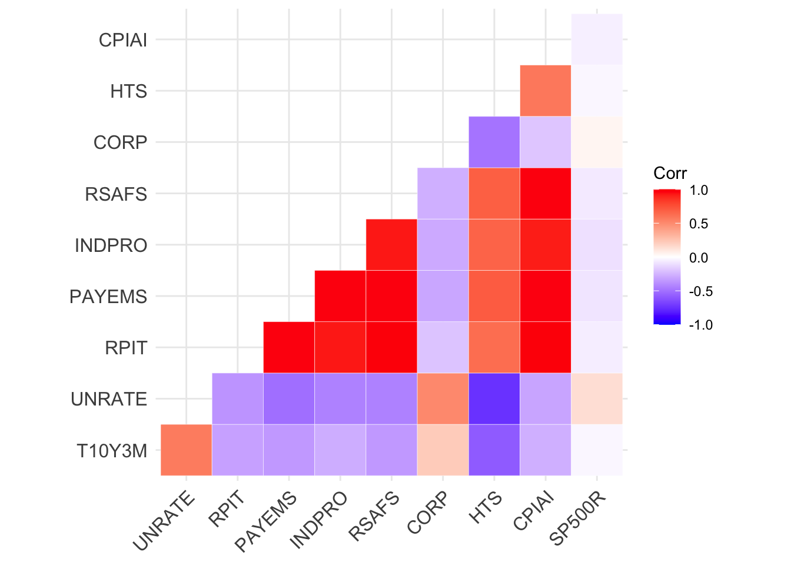
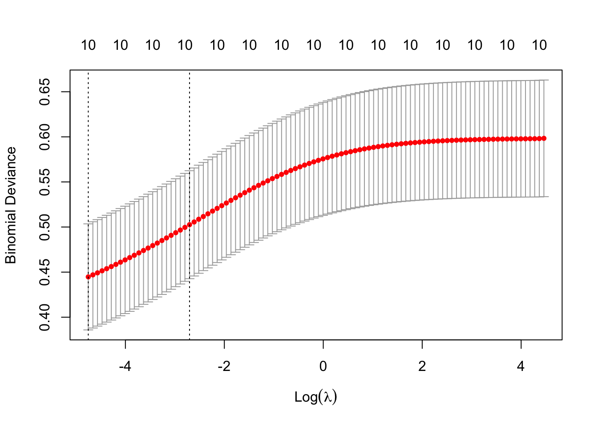

flowchart LR A[Preprocessed Data] --> B(Exploratory Data Analysis) B --> C[Logistic Regression] B --> D[Ridge and Lasso Regression] B --> E[Random Forests] B --> F[Neural Networks] C --> G[Evaluate Performance] D --> G E --> G F --> G
Machine Learning Final Project
Objective
This report investigates the predictive power of various economic indicators, including S&P500 data, Treasury Bond yields, unemployment rate, real personal income, industrial production, real GDP, and more, to develop a machine learning model for forecasting economic recessions within the next 12 months. The employed machine learning methods encompass logistic regression, ridge and lasso regression, random forests with and without boosting for ensemble-based learning, and neural networks, which capture complex relationships within the data. Inspired by contemporary economic trends, this analysis aims to employ machine learning techniques to enhance recession prediction accuracy and serve as a starting point to contribute valuable insights for informed decision-making.
Methodology
Diagram of the workflow for the methodologies that we will explore in our analysis
Dataset
This dataset encompasses a diverse array of critical economic indicators, providing a comprehensive view of the U.S. economic landscape. The dataset includes 502 observations for the following from 1982 to 2023, updated in monthly intervals:
|
|
|
|
|
|
|
|
|
|
For the purposes of our analysis, we must explicity define what constitutes a recession. The U.S. government typically defines a recession as a sustained period of economic decline marked by a contraction in real GDP for two consecutive quarters (~6 months). This widely accepted definition captures the essence of a recession, reflecting reduced economic activity, rising unemployment, and potential impacts on various sectors, all of which are crucial factors monitored within this dataset to better understand and predict economic cycles. Thus, we will stick with the government definition of a recession.
Exploratory Data Analysis
In the following section, we conduct a thorough exploratory data analysis (EDA) of key economic indicators, examining their relationships and seeking insights into trends and patterns. The objective is to gain a comprehensive understanding of the purpose of these indicators, how they have evolved over time, and to uncover potential correlations and influential factors.
10-Year Treasury Maturity Minus 3-Month Treasury Constant Maturity (T10Y3M): The difference between the 10 year treasury rate and the 3 month treasury rate. Historically shown to be one of the most accurate indicators of an incoming recession. The flattening and especially the inverting (the 3 month rate being higher than the 10 year rate) is the go-to precursor to a recession. The New York Fed uses the rate in a model to predict recessions 2 to 6 quarters ahead.
National Unemployment Rate (UNRATE): The unemployment rate represents the number of unemployed as a percentage of the labor force. Labor force data are restricted to people 16 years of age and older, who currently reside in 1 of the 50 states or the District of Columbia, who do not reside in institutions (e.g., penal and mental facilities, homes for the aged), and who are not on active duty in the Armed Forces. Has been shown in other studies to be a reliable predictor of recessions.

Real Personal Income Excluding Transfers (RPIT): Real Personal Income Excluding Transfers is an economic indicator that measures the income received by individuals and households from all sources, excluding government transfers. Government transfers include social welfare payments such as unemployment benefits, Social Security, and other forms of assistance. The “real” aspect of Real Personal Income refers to the fact that the data is adjusted for inflation, providing a more accurate measure of changes in purchasing power over time. Adjusting for inflation allows economists and policymakers to compare income levels across different time periods in terms of constant purchasing power.
All Employees: Total Nonfarm (PAYEMS): commonly known as Total Nonfarm Payroll, is a measure of the number of U.S. workers in the economy that excludes proprietors, private household employees, unpaid volunteers, farm employees, and the unincorporated self-employed. This measure accounts for approximately 80 percent of the workers who contribute to Gross Domestic Product (GDP). This measure provides useful insights into the current economic situation because it can represent the number of jobs added or lost in an economy. Generally, the U.S. labor force and levels of employment and unemployment are subject to fluctuations due to seasonal changes in weather, major holidays, and the opening and closing of schools. The Bureau of Labor Statistics (BLS) adjusts the data to offset the seasonal effects to show non-seasonal changes.

Industrial Production (INDPRO): Industrial production measures the output of goods produced or mined in the U.S. While the manufacturing sector only makes up less than 20% of the economy, this indicator is closely watched as it is highly sensitive and quick to react to changes in the business cycle. The Federal Reserve’s monthly index of industrial production and the related capacity indexes and capacity utilization rates cover manufacturing, mining, and electric and gas utilities. The industrial sector, together with construction, accounts for the bulk of the variation in national output over the course of the business cycle. The industrial detail provided by these measures helps illuminate structural developments in the economy.

Real Retail Sales (RRS): This factor is found by splicing two different statistics recorded by the US Census Bureau. Retail Sales (RETAIL), a combined value of sales and end of month inventory by stores across the US, was discontinued in 2001, and Advanced Retail Sales: Retail Trade and Food Services (RSAFS) started in 1992 and continues to this day. The difference between the two statistics seems quite marginal, with RSAFS having more advanced statistical procedures being done to it. To account for seasonal changes in consumer spending, the splice should also be deflated by the seasonally adjusted Consumer Price Index.

Corporate Bond AAA/BAA Yield Curve (CORP): To give accurate estimates at the creditworthiness of corporate bonds companies like Moody, Standard and Poor's, and Fitch have developed rating systems. The systems can differ in small ways but generally the highest rated companies have AAA, then the next highest have AA, then A and BAA or BBB and so on. This dataset will specifically use Moody's ratings and display the difference between the AAA rated bonds and BAA similar to the system in T10Y3M. Though the relationship found between CORP and recessions is quite different to T10Y3M, with AAA ratings being too high compared to BAA ratings being associated with a likely recession as opposed to them being rated too low.
Heavy Truck Sales (HTS): Heavy truck sales have been known to be a surprisingly good predictor of US recessions. Since 1973 there have been 7 recessions and according to Joseph Calhoun of Seeking Alpha, heavy trucks have been a predictor for every single one of them. The logic is that during an economic boom people will want to buy heavy trucks to transport goods to make more money, but once money gets tight commerce slows, and heavy truck sales will begin to fall.
Consumer Price Index: All Items: Total For United States (CPIAI) - A standardized growth rate of consumer prices for all items bought within the United States. This dataset is not seasonally adjusted. This data has also not historically shown to be a predictor of recessions. The purpose of this predictor is mainly as a dummy variable.
Correlation Plot:

Results
Logistic Regression: We implement a logistic regression as a benchmark method. In general, a logistic regression may struggle in predicting recessions due to its linear assumptions, limited ability to capture the complex and nonlinear relationships inherent in economic data, challenges with feature independence and changing feature importance over time, sensitivity to non-stationarity in economic variables, potential bias in handling imbalanced data where recessions are infrequent, and the difficulty in satisfying model assumptions. Additionally, logistic regression may not account for unobserved external factors influencing recessions, and its performance can be hindered by noisy or error-prone economic data. To improve recession prediction, we consider more sophisticated modeling approaches. The summary statistics for the logistic regression model implemented are below. Note that the logistic regression is able to pick up the majority of the important predictors.
Call:
glm(formula = USREC12 ~ . - DATE - USREC - USREC1 - USREC3 -
USREC6, family = "binomial", data = data)
Coefficients:
Estimate Std. Error z value Pr(>|z|)
(Intercept) 3.160e+01 1.652e+01 1.912 0.055855 .
T10Y3M -1.543e+00 3.119e-01 -4.948 7.51e-07 ***
UNRATE -1.341e+00 5.202e-01 -2.578 0.009952 **
RPIT 2.861e-03 9.637e-04 2.969 0.002989 **
PAYEMS -5.209e-04 2.100e-04 -2.481 0.013106 *
INDPRO 3.058e-01 9.951e-02 3.073 0.002121 **
RSAFS 1.602e-02 5.619e-03 2.850 0.004368 **
CORP 1.130e+00 1.174e+00 0.963 0.335748
HTS -2.633e+01 4.927e+00 -5.343 9.12e-08 ***
CPIAI -1.697e-01 4.914e-02 -3.453 0.000554 ***
SP500R -1.799e+00 5.720e+00 -0.315 0.753091
---
Signif. codes: 0 '***' 0.001 '**' 0.01 '*' 0.05 '.' 0.1 ' ' 1
(Dispersion parameter for binomial family taken to be 1)
Null deviance: 293.54 on 501 degrees of freedom
Residual deviance: 153.08 on 491 degrees of freedom
AIC: 175.08
Number of Fisher Scoring iterations: 8Decision Trees: We start off by constructing the most basic building block of a random forest: the decision tree. The primary advantage of decision trees is its high interpretability. The decision tree systematically partitions the dataset of economic indicators based on feature values to create a predictive model, recursively splitting the data into subsets by identifying the most informative features at each node, leading to a tree-like structure that represents decision rules for classifying or predicting outcomes.

As you can see above, the tree data structure allows us to easily determine classification of whether a recession is imminent based on the criteria of the predictors. To find the tree with the optimal size for our dataset, we used cross-validation and found the with the best size is 11.
Random Forests:
No Yes MeanDecreaseAccuracy MeanDecreaseGini
CPIAI 19.79604777 9.897498 21.0197141 8.303525
PAYEMS 19.78721914 14.945523 20.9800503 7.372381
T10Y3M 19.22232107 18.089494 21.9777424 6.750036
INDPRO 17.31495613 13.634345 18.6708656 5.357976
UNRATE 16.82654314 15.947784 18.5615580 5.122826
RPIT 15.90957001 9.844420 17.3334053 6.396173
HTS 15.35304416 6.533350 16.1724419 5.812410
RSAFS 14.93170663 6.627712 15.8201749 5.372720
CORP 6.49906672 5.795576 7.8748857 2.203341
SP500R 0.04413438 1.569018 0.5517998 1.759758[1] 0.01986755[1] 0.8461538[1] 0.9927536[1] 0.007246377
var rel.inf
T10Y3M T10Y3M 38.5633354
PAYEMS PAYEMS 25.4508736
HTS HTS 10.2351953
INDPRO INDPRO 8.6476528
CPIAI CPIAI 4.2167813
RPIT RPIT 3.6252005
SP500R SP500R 3.1562789
RSAFS RSAFS 2.8397048
UNRATE UNRATE 2.5063346
CORP CORP 0.7586428 [1] 1.0201863 1.0344706 1.0356843 1.0237319 1.0061348 1.0061348 1.0061348
[8] 1.0061348 1.0210383 1.0061348 1.0145707 1.0210383 1.0154268 1.0201863
[15] 1.0145707 1.0353001 1.0210383 1.0145707 1.0145236 1.0145236 1.0145236
[22] 1.0294271 1.0070797 1.0079072 1.0165179 1.0411374 1.4062366 1.4064580
[29] 1.3902217 1.2171407 1.0360710 1.1679702 1.0554123 1.0061348 1.0237319
[36] 1.0227103 1.0217952 1.0162427 1.0268738 1.0078068 1.0281020 1.0224905
[43] 1.0273705 1.0224905 1.0182094 1.0216901 1.0416719 1.0199818 1.0191814
[50] 0.9949603 1.0250195 1.0165422 1.0311638 1.0138723 1.0276689 1.0194059
[57] 1.0186428 1.0398335 1.0039242 1.0214374 1.1338479 1.1701549 1.1566369
[64] 1.1881796 1.3236806 0.9787470 0.9525644 0.9654757 0.8768427 0.8936760
[71] 0.9116895 1.1055186 1.2131811 1.4507824 1.4108423 1.0122536 1.0247382
[78] 1.0326486 1.0185555 1.0228107 1.0228107 1.0422243 1.0147152 1.0090751
[85] 1.0090200 1.0153656 1.0264268 1.0464887 1.0369677 0.9766467 0.9373068
[92] 1.0471508 1.0521132 1.1143272 1.2344382 1.3045691 1.2959669 1.3333068
[99] 1.5100691 1.5705888 1.5895848 1.4317261 1.2652451 1.2750615 1.1478735
[106] 1.0487838 1.0435977 1.0099770 1.0051030 1.0101966 1.0134162 1.0206141
[113] 1.0275979 1.0192682 1.0054263 1.0108323 1.0036641 1.0173761 1.0364104
[120] 1.0106628 1.0246324 1.0505572 1.1594384 1.1336358 1.1229370 1.1631293
[127] 1.1277708 1.1312520 1.1256377 1.0863649 1.1106474 1.1047559 1.0853054
[134] 1.0819698 1.1311735 1.1125436 1.1125436 1.0752790 1.2964296 1.1423730
[141] 1.1708797 0.9939660 1.2317590 1.1485635 1.1269125 1.1180705 0.9224985
[148] 1.2544910 1.1675836 1.1175704 1.2944328[1] 0.08609272Further Considerations
Mention Time Series Analysis